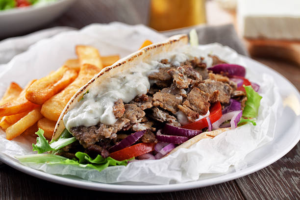

Greek Gyro

Description
A Greek gyro is a mouthwatering culinary delight that embodies the essence of Mediterranean cuisine. Tender slices of seasoned meat, often lamb, chicken, or pork, are meticulously layered onto a vertical rotisserie, allowing them to slow-cook to succulent perfection as they spin and develop an irresistible outer crispness. Once cooked, these savory shavings are nestled within a warm and soft pita bread, accompanied by a symphony of vibrant toppings like freshly diced tomatoes, crunchy onions, and crisp lettuce. The ensemble is harmonized by a dollop of creamy tzatziki sauce, a tangy blend of yogurt, cucumber, and herbs, infusing every bite with a cooling, herbaceous zing. A Greek gyro is a culinary masterpiece that seamlessly combines textures and flavors, offering a tantalizing taste of Greece's rich culinary heritage.
Ingredients
For the Gyro Meat
- 1 lb (450g) boneless lamb, chicken, or pork, thinly sliced
- 3 cloves garlic, minced
- 1 teaspoon dried oregano
- 1 teaspoon dried thyme
- 1 teaspoon paprika
- Salt and pepper, to taste
- 2 tablespoons olive oil
For the Tzatziki Sauce
- 1 cup Greek yogurt
- 1/2 cucumber, grated and drained
- 2 cloves garlic, minced
- 1 tablespoon fresh lemon juice
- 1 tablespoon fresh dill, chopped
- Salt and pepper, to taste
For Serving
- Pita bread
- Sliced tomatoes
- Sliced red onion
- Sliced cucumber
- Lettuce or fresh greens
Instructions
Prepare the Gyro Meat
- In a bowl, combine the minced garlic, dried oregano, dried thyme, paprika, salt, pepper, and olive oil.
- Add the thinly sliced meat to the bowl and toss to coat the meat evenly with the marinade. Cover and refrigerate for at least 1 hour (or overnight for stronger flavor).
Make the Tzatziki Sauce
- In a bowl, combine the Greek yogurt, grated and drained cucumber, minced garlic, lemon juice, chopped dill, salt, and pepper. Mix well. Cover and refrigerate until ready to use.
Cook the Gyro Meat
- Preheat a skillet or grill pan over medium-high heat.
- Cook the marinated meat slices for a few minutes on each side until they are cooked through and have a nice browned exterior. Cooking time will vary depending on the type of meat and thickness of slices.
Assemble the Gyros
- Warm the pita bread in a dry skillet or microwave.
- Place a few slices of cooked meat in the center of each pita.
- Top with sliced tomatoes, red onion, cucumber, and lettuce.
- Drizzle a generous amount of tzatziki sauce over the toppings.
Roll and Serve
- Fold the sides of the pita over the fillings and then roll it up tightly from the bottom, creating a gyro wrap.
- Secure with a piece of parchment paper or aluminum foil, and enjoy!
Note: You can customize your gyros with additional toppings like kalamata olives, feta cheese, or even a sprinkle of sumac for extra Mediterranean flair.